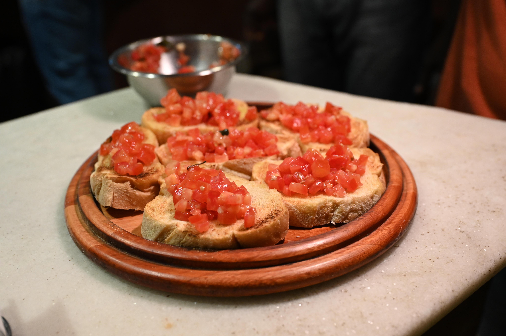
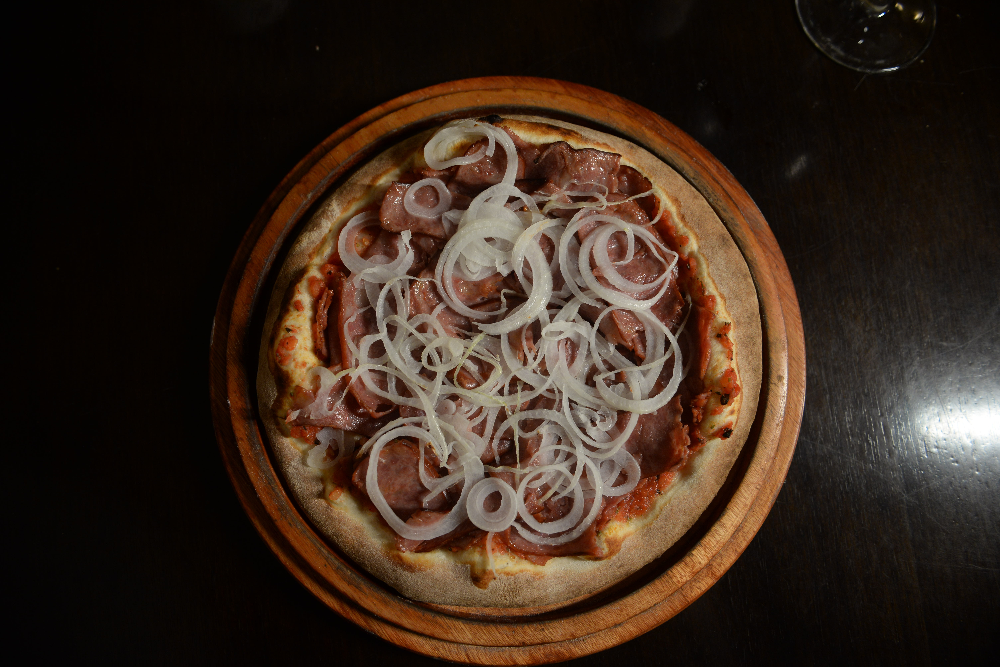
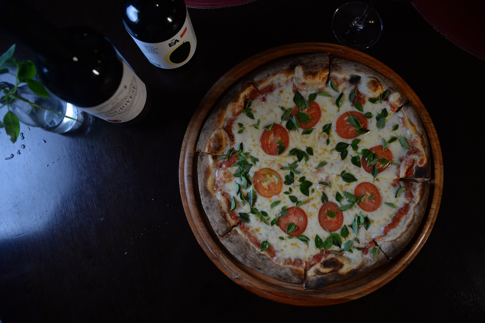
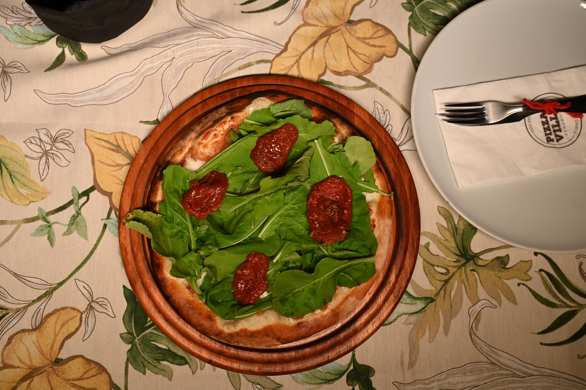
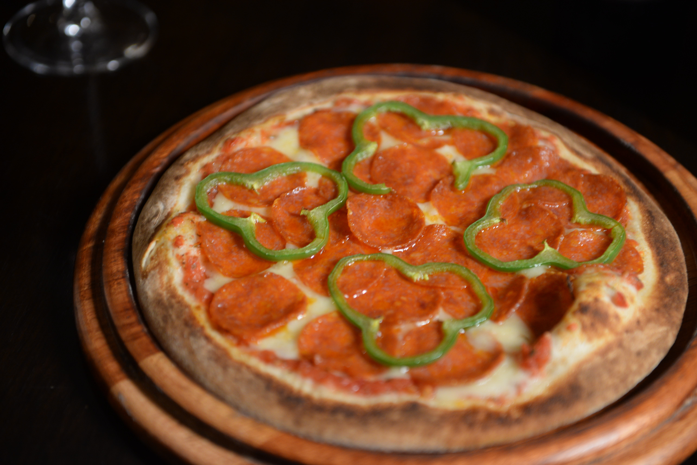
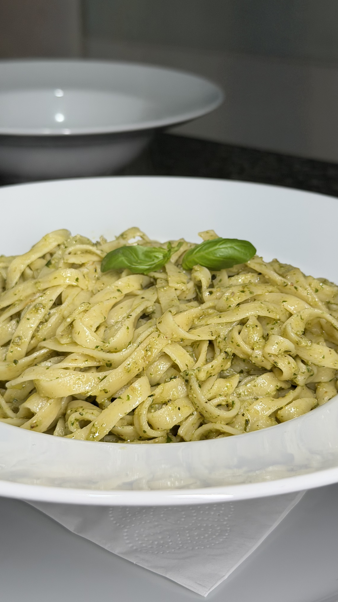
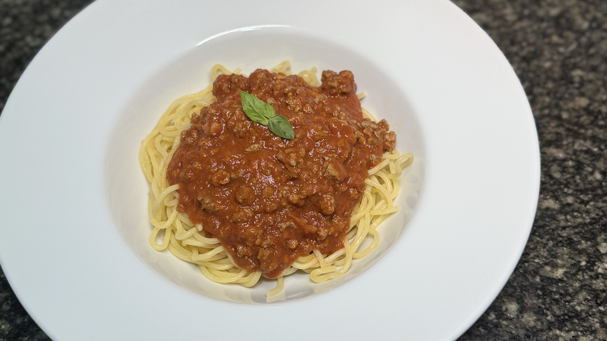

Entradas

Crostini
Lascas de massa branca fresquinhas, servidas com molho fresco de tomate.
Lascas de Provolone
Fatias de provolone finas e crocantes, salpicadas com orégano, assadas no forno à lenha.

Bruschetta Tradicional
Fatias de pão italiano artesanal tostadas no forno a lenha, tomate fresco, azeite, alho e manjericão. (5 unidades)

Burrata
Queijo de búfala fresco e cremoso, com saladinha de tomate, manjericão e rúcula hidropônica. Acompanha pão italiano artesanal.
Produto sazonal — sob consultaMini Calzones
Massa de pizza bem fina, fechada, com recheio de sua preferência. Pode ser servido fatiado ou inteiro.

Calabresa
Calabresa, tomate e cebola.
Portuguesa
Presunto, palmito, cebola, milho, mussarela e azeitona.
Margherita
Mussarela de búfala com tomate seco e manjericão.
Abobrinha
Abobrinha refogada, cebola, mussarela e parmesão.
Escarola
Escarola refogada no alho e mussarela.
Pizzas Especiais
Villa Bocaina
Molho de tomate coberto com catupiry, lâminas de provolone e gratinada com parmesão.
Villa Capelinha
Molho de tomate com cobertura de 4 queijos: mussarela, catupiry, provolone e gorgonzola.
Villa Itatiaia
Molho de tomate, cebola em rodelas, alho (cru ou frito), mussarela e parmesão.
Villa Jardim das Rosas
Lombo canadense sobre molho de tomate, mussarela e chutney de manga (à parte) — típico de Penedo.

Villa Luna
Molho de tomate, mussarela de búfala fatiada, tomate em rodelas e basílico.
Villa Mauá
Lombo canadense sobre molho de tomate, cebola em rodelas com cobertura de catupiry.

Villa Maringá
Molho de tomate, mussarela de búfala, rúcula fresca e tomates secos.

Villa Maromba
Cogumelos frescos da região refogados na manteiga e shoyo, sobre molho de tomate e mussarela de búfala.

Villa Martinelli
Rodelas de pepperoni sobre mussarela, molho de tomate e pimentão verde.
Villa Penedo
Abobrinha ralada sobre mussarela, molho de tomate, cebola em fatias, gratinada com parmesão.

Villa Resende
Molho de tomate, mussarela de búfala, orégano e lascas de presunto parma. Acompanha rúcula orgânica.

Villa Serrinha
Molho de tomate, brócolis ao alho e óleo, cobertura de catupiry e cubos de bacon.
Pizzas Doces & Sobremesas
Pizza de Banana com Canela e Açúcar
Pizza de Banana com Chocolate
Pizza de Chocolate
Petit Gateau
Com sorvete de creme e cobertura de chocolate.
Brownie
Com sorvete de creme e cobertura de chocolate.

Banana Flambada
Acompanha sorvete de creme.
Sorvete
2 bolas (creme ou doce de leite).
Massas
Nossas massas são frescas, produzidas artesanalmente em nosso Pastifício Armazém Villa do Trigo (@avilladotrigo) com ingredientes nobres (farinha italiana e ovos selecionados), seguindo receitas e procedimentos clássicos italianos.
Fettuccine ao molho de queijo

Fettuccine ao molho pesto de basílico

Spaguetti ao molho à bolonhesa
Penne ao molho sugo
Disponível também em opção sem glúten.
Kids (até 12 anos)
½ porção de spaguetti ao molho sugo ou à bolonhesa.
Lasanhas & Recheados
Lasanha Tradicional
Recheada com mussarela e fatias de presunto ao molho sugo, gratinada ao forno.
Lasanha à Bolonhesa
Recheada com molho à bolonhesa da casa, mussarela e parmesão, gratinada ao forno.

Rondelli de Parma e Búfala
Recheado com mussarela de búfala e presunto parma, molho branco, gratinado ao forno.
Rondelli 4 Queijos
Recheado com mussarela, cream cheese, gorgonzola e parmesão, molho branco, gratinado ao forno.

Raviolle da Villa
Recheado com mussarela e manjericão, ao molho sugo, gratinado ao forno.
Raviolle de Truta
Recheado com truta defumada, na manteiga de amêndoas.
Bebidas não Alcoólicas
- Água Mineral — Com ou Sem gás
- Refrigerantes e Tônicas — Lata
- H2OH
- Suco Delvalle — Uva e Pêssego
- Sucos Naturais — Abacaxi, Laranja
- Suco de Uva Integral Serra Gaúcha — Jarra 500ml
- Soda Italiana — Romã, Cranberry, Granadine, Tangerina, Maçã Verde, Limão Siciliano, Morango
Cervejas & Chopp
- Long Neck — Budweiser, Heineken, Stella, Spaten
- Therezópolis Gold — 500ml
- Heineken — 600ml
- Chopp Artesanal Penelope — PILSEN 350ml
Destilados & Drinques
- Caipirinha — Velho Barreiro
- Caipirinha — Sagatiba
- Caipiroska — Smirnoff
- Caipiroska — Absolut
- Licor — Cointreau / Licor 43
- Whisky Red Label — dose
- Whisky Black Label — dose
- Cachaça Ouro — dose
- Gin Tônica
- Aperol Spritz
Vinhos
- Solicite nossa carta.